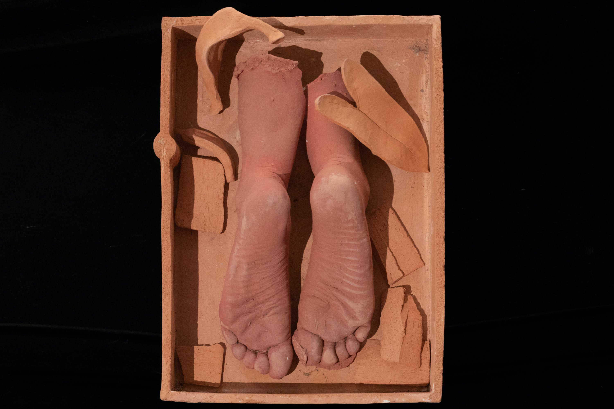
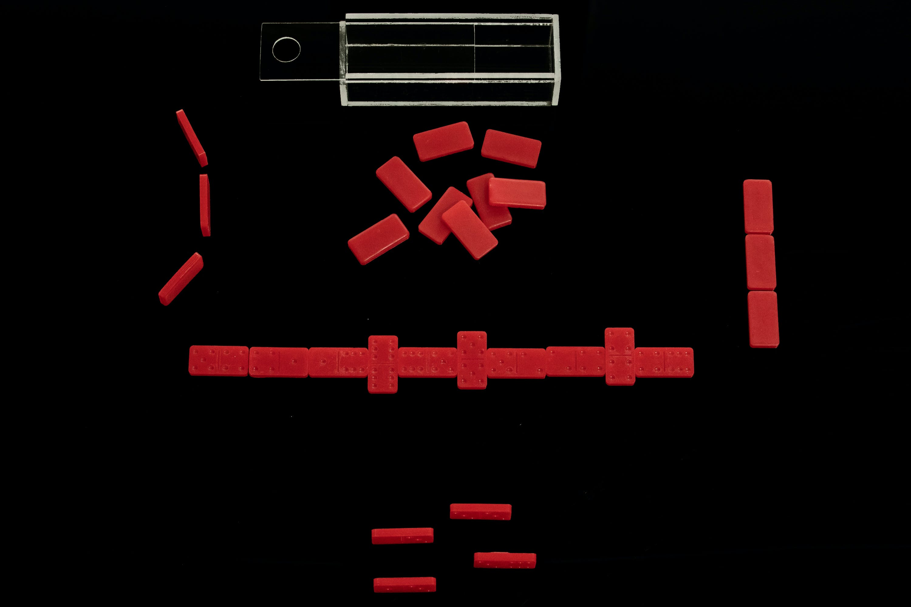

-----------------------------------------------------------------
Show Review: Fogo! Group Exhibition at SoMad

Jamie Martinez, The Journey, 2020, Carved Caulk, Paint, Oil Pastel Sticks &
Embroidery on Canvas, 24x18in, Unique
Much was done to clamour for the rights of BIPOC over the summer and steps
have been made by some art institutions to be more inclusive, but still
“FOGO!” an exhibition featuring Latinx artists in support of APIB
(Brazilian's Indigenous People Articulation) stands out amongst the rest.
The show is powerful and pays beautiful homage to an indigenous aesthetic
that is simultaneously historically rich and contemporary.

Carla Maldonado,
Noméo (in collaboration with Marli Bárbara Prado Vaz), 2020, 2:45min Loop,
Digital Video with Audio
Anytime a group show features 19 artists, one may be a bit scared as to the
amplified variety of aesthetics and varying quality of the art, but SoMad
did an impeccable job of curation, which makes the viewing experience both
pleasant and inspiring.

Priscilla
Aleman (American, b.1991) Devotional Altar Piece to The Tropics 2020 Plaster
Cast (of Artist’s Feet,) Bismarck Palm Fruit (Originating from Madagascar
collected in a conservatory in South Florida), 15x15x6in, Unique
The show is up till November 12th. It features artists Priscilla Aleman,
Lucas Cesário, Jordan Corine Cruz, Luis A. Gutierrez, Jacinta Kaiser, Carla
Maldonado, Jamie Martinez, Delfina Mun, Ibraim Nascimento, Rodrigo Oliveira,
Lauren Noelle Oliver, Eduardo Palma, Marianna Peragallo, Lara Pinheiro,
Alice Quaresma, Leonardo Ramadinha, Sara Aliaga Ticona, Athena Torri, and
Virginia Inés Vergara.

Jordan Corine Cruz (American, b. 1993) Double Six Set Prayer 2020 Votive
Wax, Acrylic, 7.6x2.8x2in, Unique
Here is more from the press release:
"SoMad is thrilled to present FOGO!. The exhibition will take place in the
physical space of the gallery open to the public from October 12th to
November 12th, 2020. Tickets can be obtained on Eventbrite for the
physically distanced Opening Reception on Indigenous People’s Day (formally
known as Columbus Day,) October 12, 2020, from 3:00–9:00pm and also for
viewing throughout the exhibition period. The show’s tickets are scheduled
so as to follow COVID-19 physical distancing guidelines and a mask must be
worn inside the gallery. An interactive 360° virtual tour of the exhibition
can be found at SoMad.NYC.
Fogo translates from Portuguese to fire, in reference to the fires ravaging
the Brazilian rainforest and wetlands. Brazil’s National Space Agency (INPE)
identified that the number of Rainforest fires in 2020 have surged by 84%.
The wetlands region alone has seen 50% more destruction than the fires
currently consuming the North American West. The burning of the most
biologically diverse habitat on the planet comes as a result of criminal
exploitative actions led by president Jair Bolsonaro.
SoMad has united a community of artists and activists, embracing the power
of art to affect social change, working to honor Latinx lives and
territories, and bringing attention to those fighting for the Earth's
survival. FOGO! features artists originating from Argentina, Bolivia,
Brazil, Chile, Colombia, Ecuador, Mexico and Puerto Rico. This exhibition
celebrates the artists’ heritage and culturally-informed stylistic
expressions.
Inspired by the life and work of Brazilian Indigenous activist and leader of
the Articulation of Indigenous Peoples of Brazil (APIB) Sônia Guajajara, the
diverse group of Latinx artists featured in this show have come together to
support the protection of the rainforest and wetlands. Guajajara is an
active spokeswoman for the country’s Indigenous movement and is on the
frontline of the fight, resisting destruction and death, demanding
environmental and social justice. SoMad and the artists are proud to invest
the gallery commissions from this show to benefit APIB, so they may continue
to protect and preserve crucial natural and social ecosystems in the Amazon.
"
SoMad is located at 34 East 23rd Street, 4th Floor New York, New York 10010
Visit www.somad.nyc for more information.